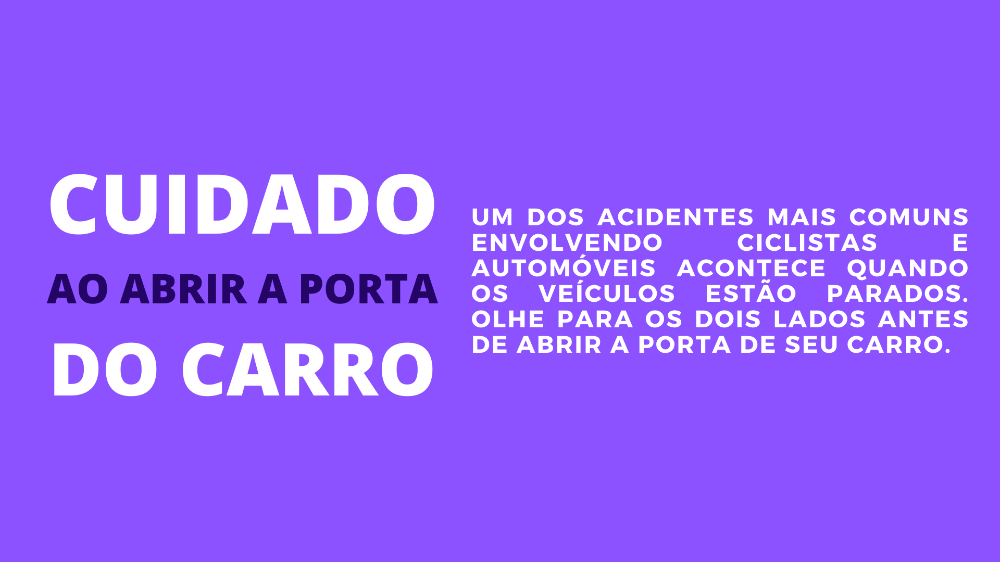

1
A HIDRATAÇÃO PARA QUEM PEDALA COMEÇA EM CASA:
BEBA MUITA ÁGUA ANTES DE PEDALAR
2
BEBA ISOTÔNICOS NA PEDALADA
3
SEMPRE BEBA ÁGUA DO COMEÇO AO FIM DO TREINO
4
COMA ALIMENTOS RICOS EM ÁGUA
5
USE GARRAFAS TÉRMICAS
6
BEBA BASTANTE ÁGUA DEPOIS DO PEDAL